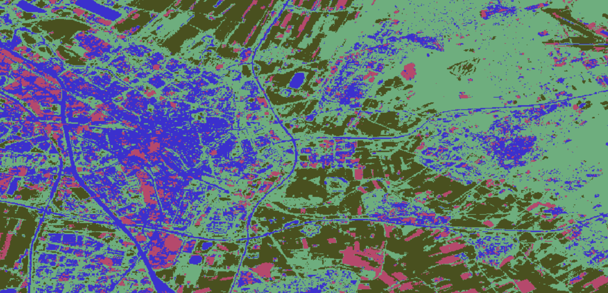
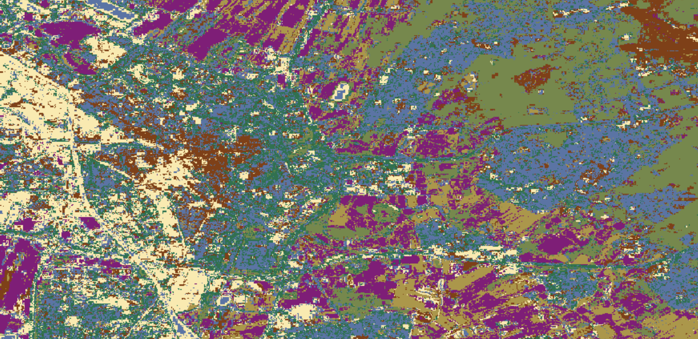
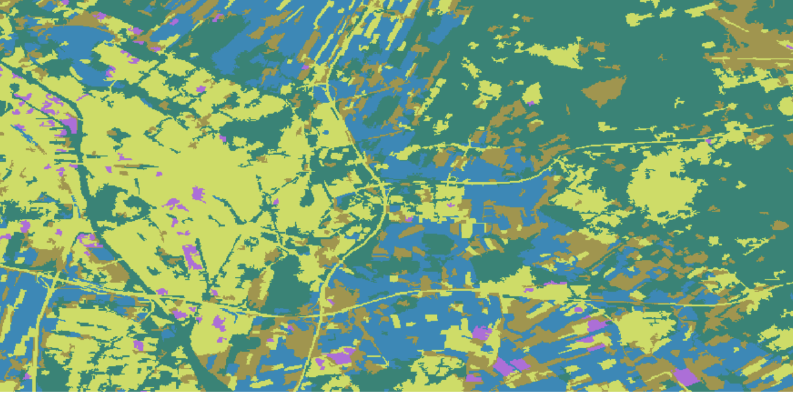
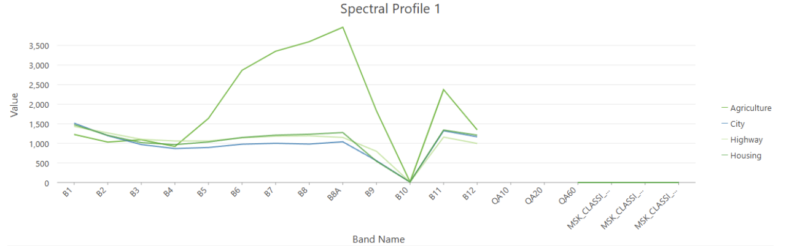

Automated land cover classification allows large areas of the Earth to be mapped quickly and consistently using spectral information captured by satellite sensors, supporting work such as tracking urban expansion, or environmental tasks that aren't able to be completed as efficiently using manual methods. Supervised classification requires the analyst to define training samples before the algorithm runs, learning the spectral signature of each class and assigning every other pixel to the class it most closely resembles. Unsupervised classification works the opposite way, grouping pixels with similar spectral values into clusters without any form of user input.
Each pixel in this composite measured roughly 60.67m per side, notably coarser than Sentinel-2's native resolution of 10 to 20m, suggesting the composite was built from coarser bands or resampled during processing.
The unsupervised pixel based classification was the fastest to run and needed no prior input, making it the most efficient method, though its output was the messiest, with scattered pink and blue breaking up what would otherwise be uniform areas. However, it still managed to do things such as pick out the urban core clearly in blue, following the road network outward, without any manual input.
The unsupervised object based method was able to fix much of that mess that we saw in the pixel based version. The same urban core that appeared as scattered blue pixels in the pixel based version instead showed up as more coherent and clean yellow-green block with smoother edges, a result of object based segmentation grouping pixels into meaningful patches before classification, making the output easier to interpret visually.
The supervised pixel based classification produced the most class rich map, with cream marking the urban core and purple, teal, olive, and rust patches scattered across the rest of the land. This version looked far more scattered overall, partly because of the added class detail. Adding on, though, you also see cream colored patches also showed up within agricultural land, likely individual buildings bright enough to be classified as urban. The river running through the image was also misclassified in places, a case of water and impervious surfaces being spectrally confused by the algorithm.